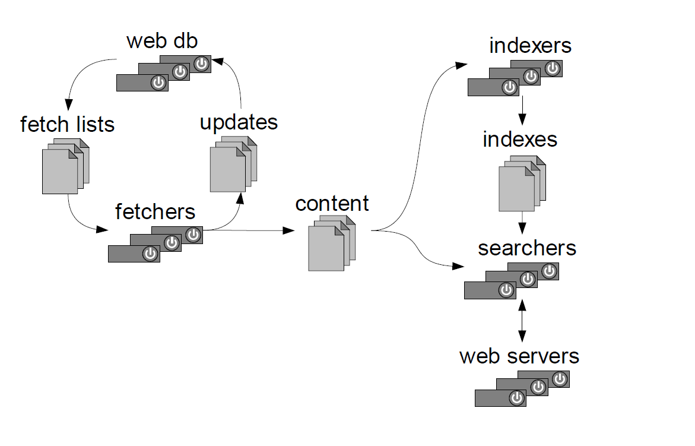
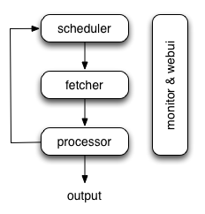
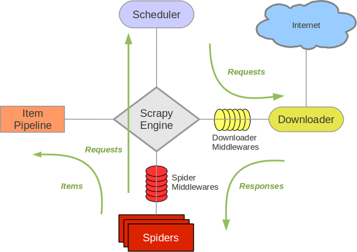

手把手教你写网络爬虫（3）：开源爬虫框架对比
原文出处： 拓海

介绍
大家好！我们从今天开始学习开源爬虫框架Scrapy，如果你看过《手把手》系列的前两篇，那么今天的内容就非常容易理解了。细心的读者也许会有疑问，为什么不学出身名门的Apache顶级项目Nutch，或者人气飙升的国内大神开发的Pyspider等框架呢？原因很简单，我们来看一下主流爬虫框架在GitHub上的活跃度：
Project | Language | Star | Watch | Fork |
Nutch | Java | 1111 | 195 | 808 |
webmagic | Java | 4216 | 618 | 2306 |
WebCollector | Java | 1222 | 255 | 958 |
heritrix3 | Java | 773 | 141 | 428 |
crawler4j | Java | 1831 | 242 | 1136 |
Pyspider | Python | 8581 | 687 | 2273 |
Scrapy | Python | 19642 | 1405 | 5261 |
看到了吗？星星数排名第一的Scrapy比其他所有的加起来都要多，我仿佛听到他这样说：
好了，以上纯属玩笑，切莫认真，不然要引发口水战了！这些框架都很优秀，都有很多用户，活跃度相对低的并不说明技术低，活跃度相对高的也许只是多满足了一些用户需求。接下来我们还是要理性的对主流爬虫框架做一个对比分析。
开源框架大PK
各路英雄已经到齐了， PK现在开始！
Nutch
介绍：
Nutch是一个开源的Java实现的搜索引擎。它提供了我们运行自己的搜索引擎所需的全部工具，包括全文搜索和网络爬虫。
尽管搜索是上网的基本要求，但是现有的搜索引擎的数目却在下降。并且这很有可能进一步演变成为一个公司垄断了几乎所有的网页搜索为其谋取商业利益。这显然不利于广大Internet用户。
Nutch为我们提供了这样一个不同的选择。相对于那些商用的搜索引擎，Nutch作为开放源代码的搜索引擎将会更加透明，从而更值得大家信赖。现在所有主要的搜索引擎都采用私有的排序算法, 而不会解释为什么一个网页会排在一个特定的位置。除此之外, 有的搜索引擎依照网站所付的费用, 而不是根据它们本身的价值进行排序。与它们不同，Nutch没有什么需要隐瞒，也没有动机去扭曲搜索的结果。Nutch将尽自己最大的努力为用户提供最好的搜索结果。

优点：
Nutch支持分布式抓取，并有Hadoop支持，可以进行多机分布抓取，存储和索引。另外很吸引人的一点在于，它提供了一种插件框架，使得其对各种网页内容的解析、各种数据的采集、查询、集群、过滤等功能能够方便的进行扩展。正是由于有此框架，使得 Nutch 的插件开发非常容易，第三方的插件也层出不穷，极大的增强了 Nutch 的功能和声誉。
缺点：
对于大多数用户来说，一般是想做一个精确数据爬取的爬虫，就像第一篇里爬歌单那个“主题爬虫”。而第二篇介绍的“通用爬虫”适合做搜索引擎，这种需求就比较少。如果以此为标准，那么为搜索引擎而生的Nutch就有着天生缺点。Nutch的架构里大部分为搜索引擎而设计的，对精确爬取没有特别的考虑。也就是说，用Nutch做主题爬虫，会浪费很多的时间在不必要的计算上。而且如果你试图通过对Nutch进行二次开发来扩展其定制能力，基本上就要破坏Nutch的框架，反而不如自己写了。
Pyspider
介绍：
Pyspider是一个国人编写的强大的网络爬虫系统并带有强大的WebUI。采用Python语言编写，分布式架构，支持多种数据库后端，强大的WebUI支持脚本编辑器，任务监视器，项目管理器以及结果查看器。

Pyspider的主要功能包括，抓取、更新调度多站点的特定的页面；需要对页面进行结构化信息提取；灵活可扩展，稳定可监控。满足了绝大多数Python爬虫的需求 —— 定向抓取，结构化化解析。但是面对结构迥异的各种网站，单一的抓取模式并不一定能满足，灵活的抓取控制是必须的。为了达到这个目的，单纯的配置文件往往不够灵活，于是，通过脚本去控制抓取成为了最后的选择。而去重调度，队列，抓取，异常处理，监控等功能作为框架，提供给抓取脚本，并保证灵活性。最后加上web的编辑调试环境，以及web任务监控，即成为了最终的框架。
优点：
1. 支持分布式部署。
2. 完全可视化，对用户非常友好：WEB 界面编写调试脚本，起停脚本，监控执行状态，查看活动历史，获取结果产出。
3. 简单，五分钟就能上手。脚本规则简单，开发效率高。
4. 支持抓取JavaScript的页面。
总之，Pyspider非常强大，强大到更像一个产品而不是一个框架。
缺点：
1. URL去重使用数据库而不是布隆过滤器，亿级存储的db io将导致效率急剧降低。
2. 使用上的人性化牺牲了灵活度，定制化能力降低。
Scrapy
介绍：
Scrapy是一个为了爬取网站数据，提取结构性数据而编写的应用框架。 可以应用在包括数据挖掘，信息处理或存储历史数据等一系列的程序中。Scrapy 使用 Twisted这个异步网络库来处理网络通讯，架构清晰，并且包含了各种中间件接口，可以灵活的完成各种需求。Scratch，是抓取的意思，这个Python的爬虫框架叫Scrapy，大概也是这个意思吧。

优点：
1. 极其灵活的定制化爬取。
2. 社区人数多、文档完善。
3. URL去重采用布隆过滤器方案。
4. 可以处理不完整的HTML，Scrapy已经提供了selectors（一个在lxml的基础上提供了更高级的接口），可以高效地处理不完整的HTML代码。
缺点：
1. 不支持分布式部署。
2. 原生不支持抓取JavaScript的页面。
3. 全命令行操作，对用户不友好，需要一定学习周期。
结论
篇幅有限，就先选择这三个最有代表性的框架进行PK。他们都有远超别人的优点，比如：Nutch天生的搜索引擎解决方案、Pyspider产品级的WebUI、Scrapy最灵活的定制化爬取。也都各自致命的缺点，比如Scrapy不支持分布式部署，Pyspider不够灵活，Nutch和搜索绑定。究竟该怎么选择呢？
我们的目标是做纯粹的爬虫，不是搜索引擎，所以先把Nutch排除掉，剩下人性化的Pyspider和高可定制的Scrapy。Scrapy的灵活性几乎能够让我们完成任何苛刻的抓取需求，它的“难用”也让我们不知不觉的研究爬虫技术。现在还不是享受Pyspider的时候，目前的当务之急是打好基础，应该学习最接近爬虫本质的框架，了解它的原理，所以把Pyspider也排除掉。
最终，理性的从个人的需求角度对比，还是Scrapy胜出！其实Scrapy还有更多优点：
1. HTML, XML源数据选择及提取的原生支持。
2. 提供了一系列在spider之间共享的可复用的过滤器(即 Item Loaders)，对智能处理爬取数据提供了内置支持。
3. 通过 feed导出 提供了多格式(JSON、CSV、XML)，多存储后端(FTP、S3、本地文件系统)的内置支持。
4. 提供了media pipeline，可以 自动下载 爬取到的数据中的图片(或者其他资源)。
5. 高扩展性。您可以通过使用 signals ，设计好的API(中间件, extensions, pipelines)来定制实现您的功能。
6. 内置的中间件及扩展为下列功能提供了支持:
1. cookies and session 处理
2. HTTP 压缩
3. HTTP 认证
4. HTTP 缓存
5. user-agent模拟
6. robots.txt
7. 爬取深度限制
7. 针对非英语语系中不标准或者错误的编码声明, 提供了自动检测以及健壮的编码支持。
8. 支持根据模板生成爬虫。在加速爬虫创建的同时，保持在大型项目中的代码更为一致。
9. 针对多爬虫下性能评估、失败检测，提供了可扩展的 状态收集工具 。
10. 提供 交互式shell终端 , 为您测试XPath表达式，编写和调试爬虫提供了极大的方便。
11. 提供 System service, 简化在生产环境的部署及运行。
12. 内置 Telnet终端 ，通过在Scrapy进程中钩入Python终端，使您可以查看并且调试爬虫。
13. Logging 为您在爬取过程中捕捉错误提供了方便。
14. 支持 Sitemaps 爬取。
15. 具有缓存的DNS解析器。
下一步
吹了半天的Scrapy，时间也到了，如果大家能够喜欢上它，学习的效率一定会成倍提升！下次我会为大家带来满满的干货，并完成更具挑战性的爬虫任务，我们下期再见！
1 赞 2 收藏 2 评论